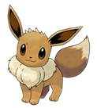
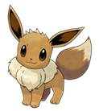

Evolution
 -> 
Vaporeon (Japanese: シャワーズ Showers) is a Water-type Pokémon introduced in Generation I.
It evolves from Eevee when exposed to a Water Stone. It is one of Eevee's final forms, the others being Jolteon, Flareon, Espeon, Umbreon, Leafeon, Glaceon, and Sylveon.
 ->
Luis Pereira | luigi1997@live.com.pt | Casa perto do Chill | 06/03/2018